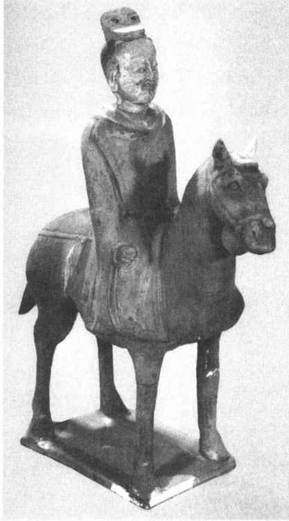

这段时期是中国职官制度从三公九卿制向更高级的三省六部制演进的过渡时期。在这三百多年里，中国大部分时间处于分裂、割据和战争的状态，因此各个王朝的职官设置就有许多不同，而且为了适应战争的需要，原来一些正规职官或撤销、或空有虚名，而一些临时性的“职务”反倒发挥了重要作用。这就造成这一时期职官设置的纷繁复杂。尽管如此，这一时期职官制度的主流还是与秦汉一脉相承的。
三国时期的职官制度基本上沿袭了汉代的官制，同时也有一些变化。这时期，曹魏的官制比较系统、完备。
东汉末年设置丞相，以曹操充任，总领百官，主持朝政。这时丞相府内分曹治事，这是内廷尚书台列曹治事移至外朝的开始。曹操又设秘书令掌管政令的颁发。
曹丕称帝后，以太尉、司徒、司空为三公，虽然地位高，但都是空衔。为了加强君主专制，曹丕把尚书台移至外朝，分为五曹治事，使它成为外围的执行机构，由尚书令主持其日常政务。同时又成立中书省，设中书监、中书令二官，并掌机密，以代替过去的秘书令。
侍中在汉代本为加官，可出入禁中。东汉灵帝时设侍中寺，以侍中为其长官，下有给事黄门侍郎等，掌随驾规谏，以备顾问。侍中常在皇帝左右，地位愈加尊贵，但也要侍候皇帝的起居生活。
上述中书省、尚书台、侍中寺格局的确立，已具备了三省制的雏形。
监察系统中，以御史中丞为御史台长，下设治书执法，掌劾奏，以治书侍御史掌律令。
蜀汉初，设丞相，以诸葛亮担任。但诸葛亮死后，蒋琬以大司马主持朝政，以后费祎、姜维又都以大将军专权。蜀汉有太尉、司徒，地位都在丞相之下。
孙吴设有丞相、太尉、司徒、司空等官，后来大将军掌权，位秩居于众官之首。
三国时期，各国的地方行政建制基本上是州、郡、县三级。魏在各州设刺史，或称州牧，为州的最高行政官长。州刺史往往被加上“使持节督某州军事”、“假节都督某州军事”等衔，从而又掌握一定的兵权。一州下辖数郡，郡长官为太守。太守加“将军”衔的，也有一定的兵权，郡下辖县，大县置县令，小县置长。其余一如东汉制度。蜀汉和东吴的地方官制与曹魏大体相同。
自西晋至南朝，或设丞相，或设司徒，废置不一，但若要总揽朝政大权，必须加有“录尚书事”的头衔才行，否则只是赠官，并无实权。朝廷又有“八公”，即太宰、太傅、太保、太尉、司徒、司空、大司马、大将军，它们是为了尊崇士族望重之人的荣宠性虚衔。此外又有“位从公”。凡骠骑、车骑等将军及光禄大夫等，若有“开府仪同三司”的头衔，都属于位从公。
这时期，中书省的中书监、令仍掌管草拟诏令、策划国政，位尊权重。由于中书省权势日重，对皇权专制的威胁渐大，于是晋时将侍中寺改为门下省，并且扩大其长官侍中的权力，使它参与朝政，“备切问近对，拾遗补阙”［9］，以此来限制中书省的权力，互相钳制。此时尚书台作为执行机构，其组织愈加完备，分工也更为细密了。在朝廷不设“录尚书事”时，则以尚书令为尚书台长官，与中书令、侍中共同参与朝政。其下有左右仆射等官。西晋时，尚书台曾设置吏部、三公、客曹、驾部、屯田、度支等六大曹，以后又有一些增减，至东晋时成为吏部、祠部、五兵、左民、度支五大曹，每曹各设尚书为其长官。西晋时又置小曹三十余，设尚书郎二十余人，分曹主事；东晋以后逐渐省并，以三四个小曹为一部，或五部，或六部不定。南朝时，改尚书台为尚书省。
总之，这一时期是三省开始形成和进一步发展完善的时代。在这一过程中，它们之间的权限、分工也是逐渐趋于严密的。
由于三省权力的扩大，原秦汉以来的九卿职权多被侵夺，到了魏晋南北朝时期，九卿的职权已有很大变化，有的只徒具虚名，有的则从中央执行机构一落而成为某一方面的具体服务机构了。例如：光禄勋原是皇帝的侍从武官长，握有兵权，西晋时称光禄卿，只有空名了，以至“不复居禁中，又无复三署郎，唯外宫朝会，则以名到焉”［10］。北齐时光禄卿成了安排筵席的衙门了。
至于北朝，包括北魏、东魏、西魏、北齐、北周五朝，长达200年的统治，其官制基本上沿袭了魏晋以来的旧制。北魏政权是由鲜卑族拓跋部贵族建立的，最初他们依照本族传统设置八部大夫，分管政事；又设36曹尚书分理各种政务。太和中，魏孝文帝对北魏官制进行了重大改革，他依照南朝职官体制对北魏官制作了较大的调整。魏孝文帝的政治改革，促进了南北文化的交流和融合。改革后，北魏中央主要职官设置如下：
三师：太师、太傅、太保
二大：大司马、大将军
三公：太尉、司徒、司空
三省：中书省长官：中书监、中书令
门下省长官：侍中
尚书省长官：尚书令、左右仆射
北魏以后的东魏、西魏、北齐官制大体相因袭。（图5—5）西魏末年，苏绰等依《周礼》六官制度拟订改革官制计划，至北周方才实行。北周初年，以天官冢宰总领地官司徒、春官宗伯、夏官司马、秋官司寇、冬官司空五官，形成五府总于天官的格局。这样一来，朝廷的军政大权便都集中于天官冢宰了。北周武帝时，削夺了天官冢宰总领其余五官的权力，从而恢复和加强了君主专制统治。这时六官只是处理各自的日常政务，而朝廷大政便由皇帝亲信的官员来参与，《周礼》六官制度便只成了一个空架子。以后杨坚建立隋朝时，把这种形式也取消了。

图5-5 北齐骑马文吏俑，山西太原王郭村北齐娄睿墓出土
关于监察职官，这一时期的御史台以御史中丞为其长官，惟北魏称御史中尉。监察官员的权力极大，所谓“自皇太子以下，无所不纠”［11］。北魏时，御史中尉巡行时“与皇太子分路，王公百辟咸使逊避，其余百僚，下马弛车止路旁，其违缓者，以棒棒之”［12］。可见震肃百僚的威势之大。
御史中丞之下，晋代除设治书侍御史外，又设黄沙狱治书侍御史，掌管诏狱及廷尉处置不当之事。此外还有殿中侍御史、符节御史及分曹治事的侍御史等。
这时期无论南北，地方都是州、郡、县三级制度，但是州、郡的辖境日益缩小，而数量大为增加。
州是最高一级的地方行政区划，行政长官为刺史，下设别驾，诸曹从事等。国都所在州的长官，一般称为牧。州下为郡，其行政长官为太守，国都所在郡的长官一般称为尹。郡下为县，以县之大小分置令、长。县下还有乡、里。
由于长年战乱，刺史、太守多带将军称号，权重者更有“使持节都督某州（或某某数州）军事”等头衔。凡无“将军”等头衔的被称为“单车刺史”。为了限制刺史的权力，有时又特命刺史属官如别驾、长史等代行刺史职权，叫做“行事”；有时在刺史之下另设“典签”官以监督刺史。
在南方又有侨州、郡、县。东晋以后，北方的一些士族及大批流民陆续移居江南，于是政府划出一些特定的区域安置这些人，但仍用北方家乡的地名称呼这些新设置的州、郡、县，它们便是侨州郡县。
晋代封爵有诸侯王国和公国、侯国。王国、公国、侯国都设相，王国的相后改称内史。王国内史及公国的相，位当郡太守，侯国的相位当县令。
曹魏开始以品级区分官阶的高低，秦汉以来用“石”表示官位大小的做法被取消。魏晋官阶分为九品，即九等。北魏在九品的基础上又把每品分为正、从两种，成为18等；自正四品以下，每品又分上下阶，这样总共30等。
北周依《周礼》以“命”计官阶。第一品为九命，最高。依次类推，第九品为一命，最低。
这时期的爵位制度很繁杂。曹魏之初定爵位为王、公、侯、伯、子、男六等，再下又有县侯、乡侯、亭侯、关内侯。此外还有名号侯、关中侯、关外侯、五大夫等，每种又分十数级。南朝大体沿袭前代制度。
北魏定爵位为王、公、侯、伯、子、男六等。北周无“王”，为五等，皆加“开国”。
南北朝时又出现一种荣誉性的称号“勋”，用以赐赠给有勋劳的高级官员。勋的等级称“转”，最高为十二转。勋的每一转都有固定的称号。
晋代俸禄有谷、绢、绵、菜田等。南朝有“遥带”做法，即文武京官多遥带一郡县官，并不到任，只是从该郡县领取俸禄。北魏官员原无俸禄，反而助长贪污之风。孝文帝依官品级制定了百官俸禄。北齐以绢定俸禄，而以帛、粟、钱发放。北周以谷定禄，以年成好坏决定颁发数量，遇凶年即全部停发。